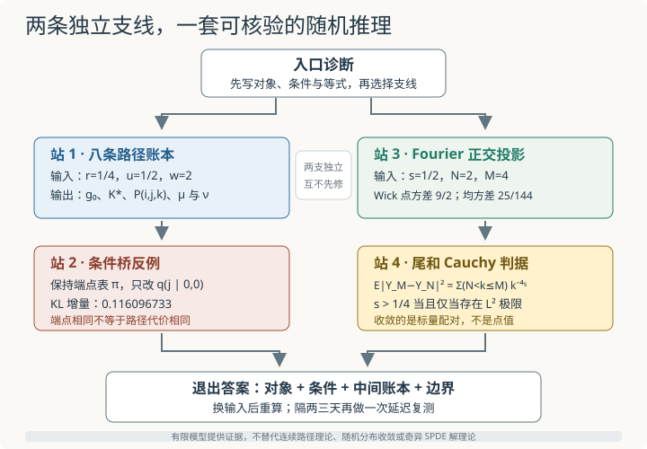

本页目录
学习路线 02 · 路径熵与 Wick 极限
这是一条含两支的四站计算路线。有限路径熵支线：Markov 路径桥 → Schrödinger 桥；随机场极限支线：Wick 平方与截断极限 → 奇异 SPDE。两支共享概率、条件分解与极限论证的习惯，但互不构成先修，可以任意先做一支。目标是交出可逐项核验的有限模型证据，不是宣称已经掌握一般路径空间测度或奇异 SPDE 解理论。
面对随机对象，你能说清“改了什么”和“收敛的是什么”吗？
1. 先做入口诊断，再选择支线
准备一页计算纸。每题既写结论，也写决定结论的等式；仅凭熟悉词语猜答案，按“需要回课”处理。
| 入口题 | 应交的证据 | 若卡住，从哪里开始 |
|---|---|---|
| A：终端势 \(g_2=(1,w)\) 中的 \(w\) 是否就是终点状态 1 的概率？ | 写出 \(g_0=K^2g_2\) 与终边缘公式 | Markov 路径桥 |
| B：保持起终点边缘不变，任意修改中间条件桥会不会保持路径 KL 不变？ | 写出相对熵的条件链式分解 | Schrödinger 桥 |
| C：减去 \(\mathbb E X_N(x)^2\) 后，点上 Wick 平方的方差是否自动有界？ | 用 Gaussian 四阶矩算方差 | Wick 平方与截断极限 |
| D：本路线证明收敛的是点值、随机分布，还是一个标量配对？ | 明确写出随机变量与所用范数 | 奇异 SPDE |
入口题核对：根据第一次说不清的地方进入相应站点
A：不是。\(w\) 是路径的终端相对权重，终边缘还取决于初始边缘与参考链的可达性：
B：不会。固定端点联合分布 \(Q_{02}\) 时，条件项
通常会增加；只有保留参考条件桥才把它压到零。C：不会。若 \(X_N(x)\) 是方差 \(C_N\) 的中心 Gaussian，则
D：本路线只证明
这个标量随机变量在特定参数范围内按 \(L^2(\Omega)\) 收敛。它不是逐点极限，也不是完整随机分布或 SPDE 解。
若 A、B 能独立完成，可以直接从第三站开始随机场支线；若 C、D 能独立完成，也可以先做路径支线。不要把支线顺序误读为理论依赖。

2. 统一记账规则：概率表和极限式都不能只看最后一格
路径支线固定状态 \(\{0,1\}\)、时刻 \(0,1,2\)，参考初始分布为 \((1/2,1/2)\)，参考转移为
相对熵统一使用自然对数。若候选律在参考概率为零的事件上放了正质量，KL 记为 \(+\infty\)。
随机场支线固定圆周 \(\mathbb T=[0,2\pi]\) 上的归一化平均
并让所有截断共用同一组独立标准 Gaussian 系数。比较 \(Y_M-Y_N\) 时若重新抽样，就已经换了问题。
四站共同采用一条验收规则：先写输入，再写中间对象，最后写等式和误差。只报告终点概率、一个 KL 数字或一张趋降曲线，都不算完成。
3. 第一站：从向后势算出八条路径
固定输入。 取
交卷要求。 算出 \(g_1=Kg_2\)、\(g_0=K^2g_2\)、初始校准因子 \(f\)、两步 Doob 转移、八条路径概率和三个时刻的边缘。另写一句为什么终点状态 1 的概率不等于 \(2/3\)。
第一站题解：势向后走，概率向前走
逐次矩阵乘法给出
因为参考初始分布是 \((1/2,1/2)\)，
由
得到
每行和为 1，因为 \(g_t=Kg_{t+1}\)。路径律为
| 路径 | 000 | 001 | 010 | 011 | 100 | 101 | 110 | 111 |
|---|---|---|---|---|---|---|---|---|
| \(P\) | \(9/44\) | \(3/22\) | \(1/44\) | \(3/22\) | \(3/52\) | \(1/26\) | \(3/52\) | \(9/26\) |
求和得到
终点状态 1 的概率是 \(94/143\approx0.657343\)，不是 \(2/3\)。\(w=2\) 只是相对于状态 0 的终端势比；分母 \(g_0(i)\) 还携带从每个起点到终点的两步可达性。
实验核对。 路径实验让 \(r\) 在 0.05 到 0.45、\(w\) 在 0.25 到 4、\(u=\mu_0\) 在 0.1 到 0.9 间变化，默认值正是本题输入。每次调参都重新导出终边缘，不是任意指定双边缘的求解器。
无脚本后备：默认状态 1 概率依次为 \(0.500000,0.562937,0.657343\)；路径 KL 与端点 KL 都为 \(0.0536544361\)。八条路径的精确值见本题表。
4. 第二站：端点不动，只改条件桥
固定输入。 沿用第一站的 \(P\) 与参考律 \(R(i,j,k)=\tfrac12K_{ij}K_{jk}\)。先把端点联合分布写成
参考端点表为
构造另一条路径律 \(Q\)：保持端点联合表 \(Q_{02}=\pi\)，对除 \((i,k)=(0,0)\) 外的端点对保持参考条件桥；只把
改成
交卷要求。 写出被改变的两条路径概率，证明两端边缘不变，再用 KL 链式分解计算增加量。
第二站题解：同一端点表并不决定同一个路径代价
因为 \(\pi_{00}=5/22\)，新路径概率为
原来这两格分别是 \(9/44,1/44\)；它们的和仍为 \(5/22\)。其他六格保持不变，所以整个端点联合分布 \(Q_{02}=\pi\)，起点与终点边缘当然也都不变。
相对熵按端点和条件路径分解：
只有 \((0,0)\) 项非零。它的条件 KL 为
乘端点权重后，路径 KL 的增加量是
第一站的 \(P\) 保留了所有参考条件桥，所以
新路径律则有
这给出一个严格反例：保持端点联合分布，甚至不只保持两端边缘，仍可因改变中间条件桥而增加路径 KL。
这两站完成的是有限状态、有限时刻、参考路径全正时的熵投影。它把Schrödinger 桥中的条件分解落到了八格账本上；没有证明连续路径的解离存在性、Girsanov 公式，也没有实现任意给定双边缘的势迭代。
5. 第三站：用正交性把 Wick 平方变成有限和
路径支线到此已经完成。现在独立开始随机场支线，不需要把 \(K,g_t\) 或路径 KL 带过来。
令
其中 \(a_k,b_k\) 相互独立且服从 \(N(0,1)\)。设
固定输入。 取 \(s=1/2,N=2,M=4\)。交卷要求。 用 Fourier 正交性写出 \(Y_2\)，再算点上 Wick 平方方差、\(\operatorname{Var}Y_2\) 与 \(\mathbb E|Y_4-Y_2|^2\)。
第三站题解：空间平均删除的是交叉频率
归一化平均满足
因此
令 \(Q_k=a_k^2+b_k^2-2\)。它们独立、均值为零、方差为 4。对 \(s=1/2,N=2\)，
点方差尺度为
所以点上 Wick 平方的方差仍是
空间平均后的方差则为
因为 \(Y_4\) 与 \(Y_2\) 使用同一组系数，前两项相消：
故
均方根差恰为 \(5/12\)。减均值没有让点值稳定；真正改变求和结构的是测试函数平均与 Fourier 正交性。
6. 第四站：从有限尾和判定真正的收敛对象
固定输入。 仍使用同一耦合，先取一般 \(s\)，再分别代入 \(s=1/2\) 与临界值 \(s=1/4\)。交卷要求。 推导跨截断均方差，给出 \(L^2\) Cauchy 的充要阈值，并用 \(N=16,M=32\) 的数值区分收敛情形与临界反例。
第四站题解：先看无穷尾，再解释有限图
独立性给出精确等式
所以 \((Y_N)\) 在 \(L^2(\Omega)\) 中 Cauchy，当且仅当
也就是
此时 \(L^2\) 完备性给出一个标量随机变量 \(Y\in L^2(\Omega)\)，使 \(Y_N\to Y\)。还可由积分比较得到
当 \(s=1/2,N=16,M=32\) 时，
均方根差约 \(0.172686796\)，到无穷截断的均方误差上界为 \(1/16=0.0625\)。
临界 \(s=1/4\) 时，
不会趋零。\(N=16\) 时已经是 \(0.6777662022\)。有限曲线即使局部下降，也不能推翻这条倍增子序列的非 Cauchy 证据。
收敛对象始终是
不是 \(X_N(x)^2-C_N\) 的点值，也不是完整随机分布 \(:X_N^2:\)。
实验核对。 Wick 实验令 \(N\) 从 2 到 128、\(s\) 从 0 到 1，始终比较 \(M=2N\)；默认 \(N=16,s=1/2\)。
无脚本后备：
| 参数 | \(C_N\) | 点上 Wick 方差 | \(\operatorname{Var}Y_N\) | \(\mathbb E\lvert Y_{2N}-Y_N\rvert^2\) | 结论 |
|---|---|---|---|---|---|
| \(N=16,s=1/2\) | 3.380728993 | 22.858657051 | 1.584346533 | 0.029820729 | 有 \(L^2\) 极限 |
| \(N=16,s=1/4\) | 6.663994608 | 88.817648277 | 3.380728993 | 0.677766202 | 临界，不是 \(L^2\) Cauchy |
这两站只为常数测试函数建立了一个标量 \(L^2\) 极限。它为奇异 SPDE提供“点值发散但测试函数配对可能收敛”的具体证据，却不能推出任意测试函数下一致收敛，更不能推出某个非线性 SPDE 的解存在、唯一或与近似无关。
7. 退出题：换一次输入，证据链还在吗？
合上四站题解，分别完成两小题。它们互相独立，可以分两页提交。
路径题。 保持第二站的端点表 \(\pi\)，只把 \((0,0)\) 条件桥从 \((9/10,1/10)\) 改成 \((4/5,1/5)\)。计算路径 KL 增量与新总 KL。
极限题。 改取 \(s=3/8\)。判断点方差尺度 \(C_N\) 是否有界、\(Y_N\) 是否在 \(L^2\) 收敛，并给出到极限的均方误差与均方根误差上界。
退出题答案与验收标准
路径题的条件 KL 为
只有端点对 \((0,0)\) 被修改，所以
新总 KL 为
极限题中 \(2s=3/4\le1\)，故
发散，点上 Wick 方差 \(2C_N^2\) 也发散。但 \(4s=3/2>1\)，所以 \(Y_N\) 在 \(L^2\) 中收敛。积分比较给
以及
通过要求：路径题必须说明端点表未改，极限题必须明确区分点上发散与标量配对收敛；只报两个小数或只写“重整化有效”都不通过。
隔两三天不看答案复测：路径支线改用 \(r=1/3,u=2/5,w=3/2\)，至少算到 \(g_1=(7/6,4/3)\)、\(g_0=(11/9,23/18)\) 与导出终点概率 \(\nu_1=771/1265\)；随机场支线用 \(s=3/8,N=2,M=4\)，从有限和重新算 \(\operatorname{Var}Y_2\) 与跨截断均方差。这两组分数输入不落在当前实验滑块的离散步长上，应手算或自行编程复算，不能用最接近的网格值冒充原题。保存首次错误、修正理由和复测日期，本页不记录作答数据。
8. 边界清单：四站结束后仍不能声称什么
| 已完成的证据 | 可以继续 | 仍需另外证明 |
|---|---|---|
| 两状态三时刻路径律、Doob 转移与 KL 条件分解 | Schrödinger 桥的连续路径动机 | 任意双边缘势求解、连续解离、Girsanov 条件 |
| 一次保持端点表但提高路径 KL 的反例 | 理解参考条件桥为何是熵投影的一部分 | 一般空间中的存在唯一性与数值收敛 |
| 常数测试函数下 Wick 平方的有限和与 \(L^2\) Cauchy 判据 | 奇异 SPDE的重整化入口 | 任意测试函数估计、随机分布拓扑、非线性解理论 |
| 临界 \(s=1/4\) 的倍增反例 | 判断有限图像能否支持极限主张 | 一般 Wick 幂、时间正则性和近似稳定性 |
速查与资料
| 支线 | 核心分解 | 必须说清的对象 |
|---|---|---|
| 有限路径熵 | \(H(Q\mid R)=H(Q_{02}\mid R_{02})+\mathbb E_{Q_{02}}H(Q^{ik}\mid R^{ik})\) | 完整路径概率律 |
| 随机场极限 | \(\mathbb E\lvert Y_M-Y_N\rvert^2=\sum_{N<k\le M}k^{-4s}\) | 标量随机变量 \(Y_N\) 的 \(L^2(\Omega)\) 极限 |
路径空间 Schrödinger 问题、条件桥与熵分解参照 Léonard 的作者论文 A survey of the Schrödinger problem and some of its connections with optimal transport，其期刊版发表于 2014 年；小噪声趋向 Monge–Kantorovich 需额外条件，见 From the Schrödinger problem to the Monge–Kantorovich problem。Gaussian Fourier 场、Wick 幂与 \(L^2\) 构造可对照 Hairer 的作者讲义 Advanced Stochastic Analysis；奇异随机方程为何还需要模型、重整化和解映射理论，见 Hairer 的 Renormalisation of parabolic stochastic PDEs。本页新增有限数值均已从所列公式独立复算；资料核查：2026-09-08。
继续连续时间路径熵与控制，用完整高斯模型对照终端倾斜、Doob漂移、条件桥与路径能量。
后续练习：热核正则化与随机分布把单一测试函数推广到完整 Sobolev 范数，推导精确阈值与临界壳层，并区分有限频率图和无穷尾界。
后续练习：分布乘积与重建从相位反例、负Sobolev单壳层极限走到准确的模型相容条件，区分重整化对象与重建定理的职责。